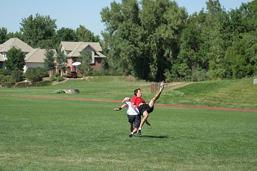
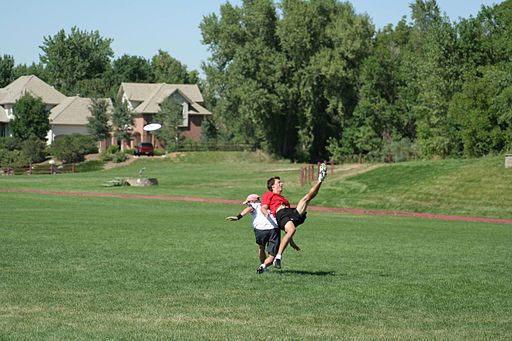
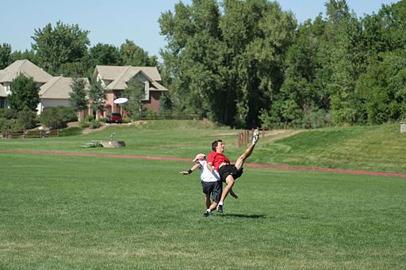
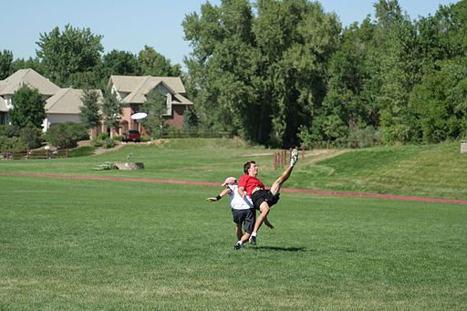

Ultimate Frisbee/Ultimate has been around in some fashion since the 1960s. Joel Silver is credited with introducing the game to his high school in 1968 after learning about the game at summer camp. The game spread to more college campuses soon afterward.
The Ultimate Players Association was founded in 1979 and began organizing touraments across the country. In 2010, UPA because the USA Ultimate.
Other than professional tournaments, games of Ultimate are typically played without referess. Instead, players rely on "The Spirit of the Game" to encourage sportsmanship and self-officiating.